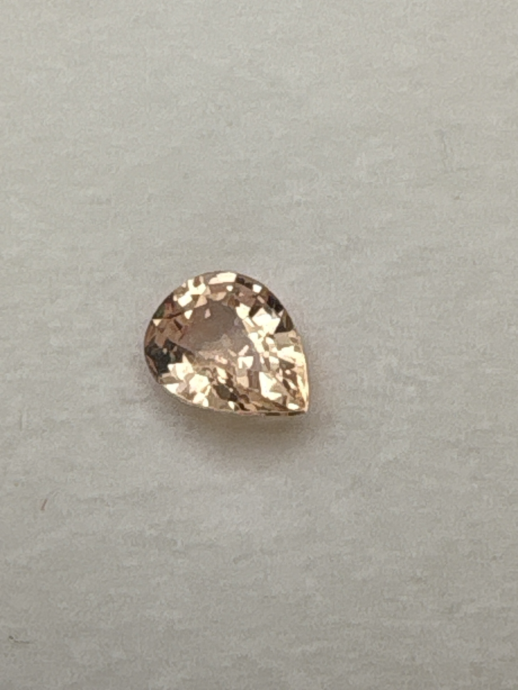

The Gem Drawer › No. 54

A salmon-peach pear-cut Ceylon sapphire; the padparadscha call is the seller's guess.
| Catalogue no. | #54 |
|---|---|
| As labeled | Sapphire - labeled "Ceylon Sapphire," handwritten note says "probably Padparadscha" (recommend lab verification given uncertainty and value gap, see notes) |
| Shape / cut | Pear |
| Weight | Unclear - see notes (illegible number on handwritten note) |
| Measurements | Not recorded |
| Colour | Peachy/salmon pink-orange |
| Clarity / condition | Not recorded |